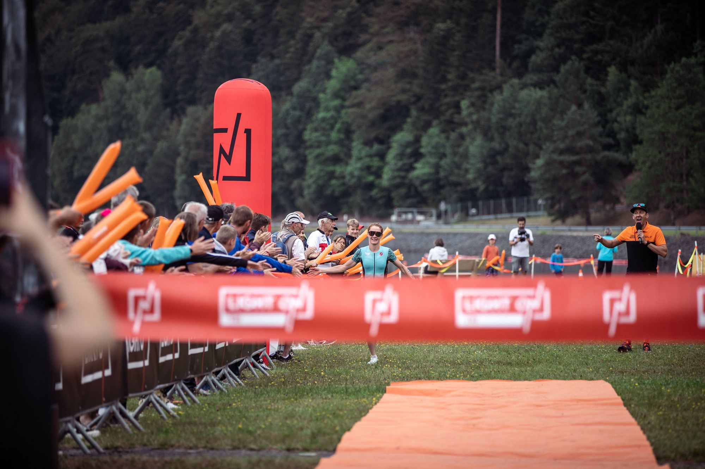
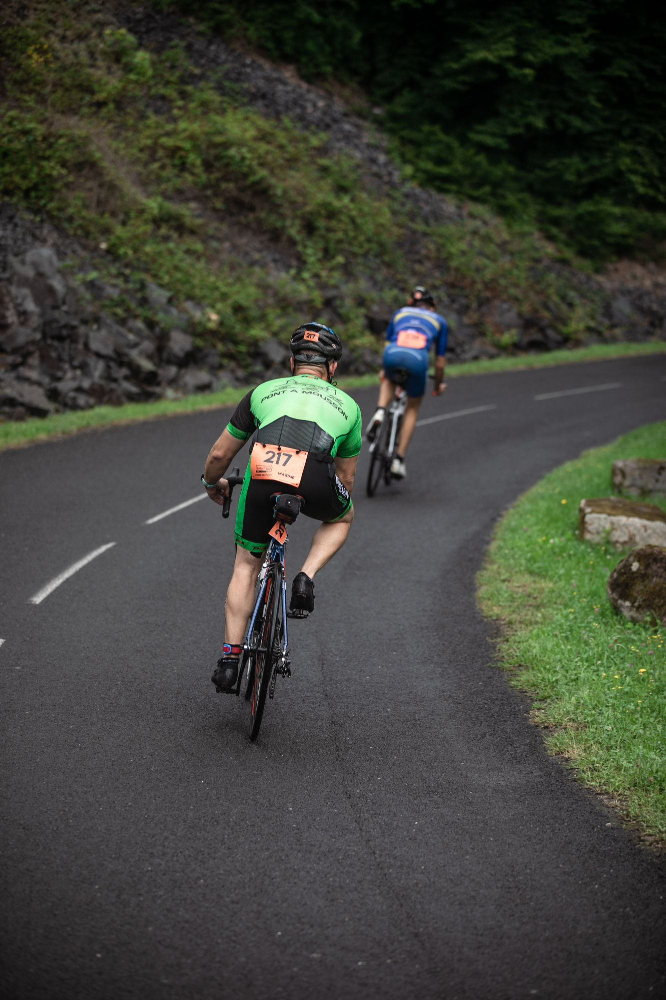
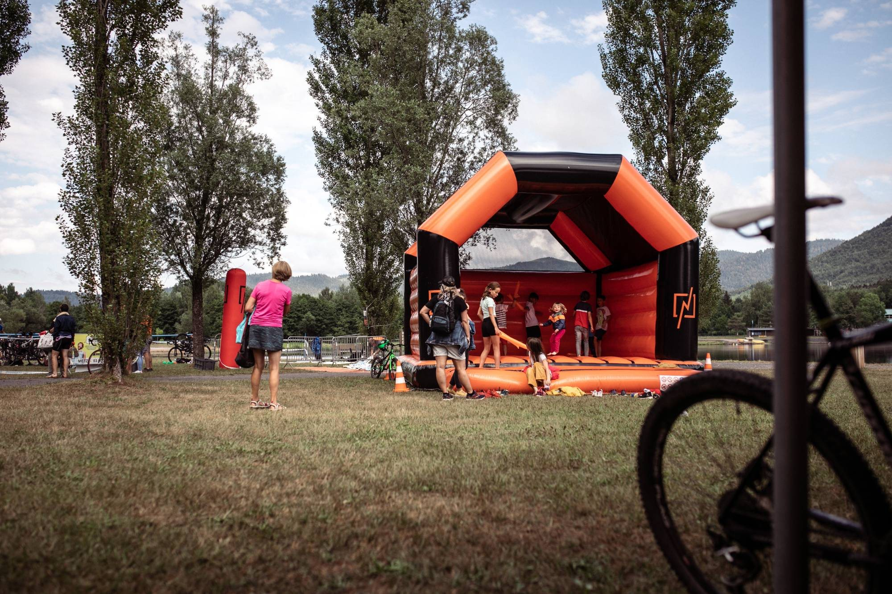
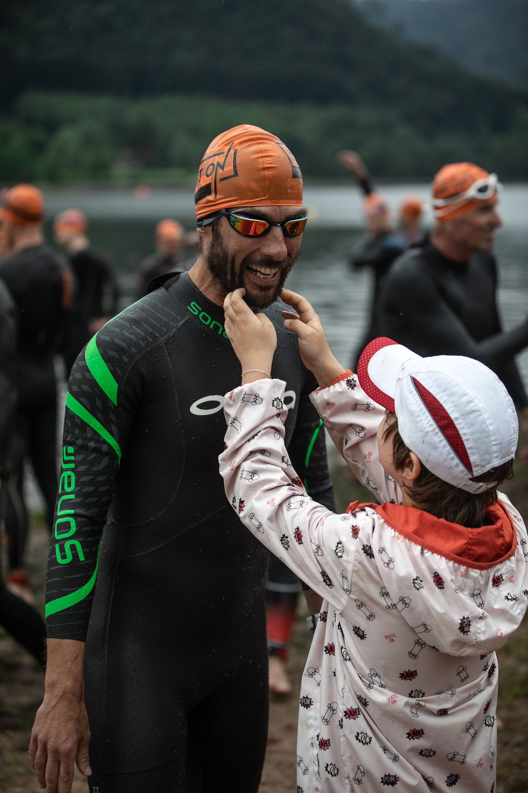
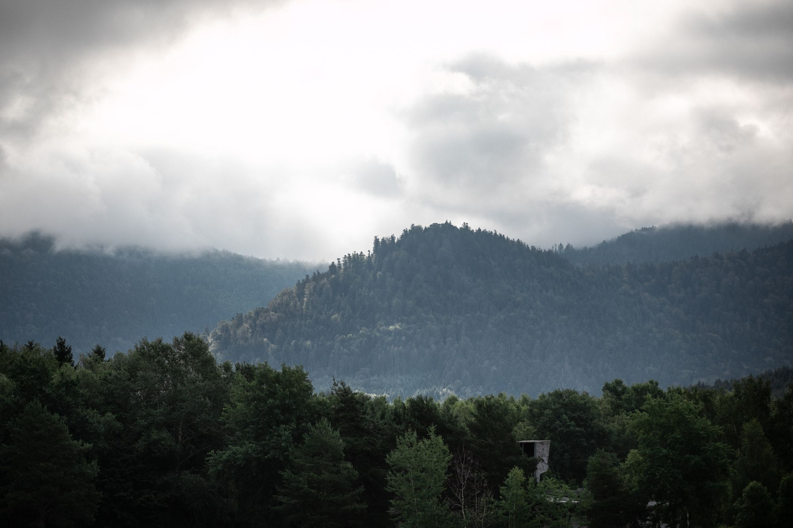
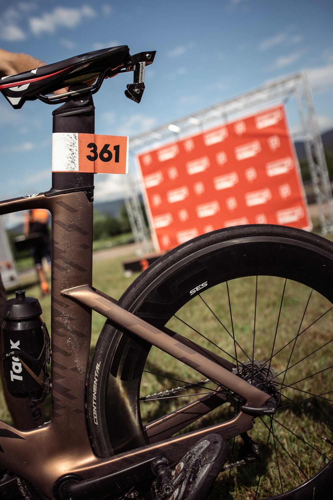

LIGHT ON TRI Pierre-Percée*** · L'événement Trois jours, deux lacs.
Dossards le vendredi soir, L*** et enfants le samedi, S* et M** le dimanche. On nage dans le lac de Pierre-Percée, on finit au Village LIGHT ON, au bord du lac de la Plaine.
Le week-end, heure par heure.
Horaires du règlement 2027 (article 6). L'organisation peut les ajuster pour le bon déroulement de l'épreuve : la version définitive sera dans le guide participant.

Tout se passe au Village LIGHT ON.
Retrait des dossards, T2, course à pied, arrivée et remise des récompenses : tout se passe au lac de la Plaine, supporters compris. Seule la natation a lieu au lac du haut.
Retrait des dossards
Au Village LIGHT ON (base de loisirs de Celles-sur-Plaine, au bord du lac de la Plaine). Le vendredi 11 juin de 17h00 à 19h00 pour tout le monde, puis des créneaux le samedi et le dimanche selon votre course. Pièce d'identité obligatoire.
Le samedi des enfants
MiniKids à 11h00, Kids à 11h30 : deux duathlons entre le départ du L*** et le RUN 5 KM. Les parents encouragent, puis échangent les rôles.
Deux parcs à vélo
T1 au lac de Pierre-Percée, après la natation. T2 au Village LIGHT ON, au lac de la Plaine, avant la course à pied. Le guide participant précisera les horaires d'ouverture.
Remise des récompenses
Podiums hommes et femmes sur chaque format. Primes sur le L*** (200, 150, 100 €) et le M** (100, 75, 50 €), plus le podium vétérans.


Vos impressions, on a hâte.
Nager dans un lac, finir au bord d’un autre : les premiers retours sur ce triathlon, ce seront les vôtres. Rendez-vous ici après le 13 juin.
Lieu & accès.
Ici, le triathlon relie deux lacs. Vous nagez dans le lac de Pierre-Percée, en haut, puis vous descendez à vélo jusqu'au lac de la Plaine, en bas, où vous attendent la course à pied, l'arrivée et le Village LIGHT ON. C'est là que tout le monde se retrouve.

Le triathlon en deux lacs
Retrait du dossard
Au Village LIGHT ON, base de loisirs de Celles-sur-Plaine, au bord du lac de la Plaine (le lac du bas).
Montée au lac du haut
Vous prenez votre vélo jusqu'au parc à vélo de la natation, au lac de Pierre-Percée (parking de l'Anse de Pierre-Percée).
Natation et T1
Départ sur la plage du lac de Pierre-Percée, puis première transition au même endroit.
Vélo et T2
Vous roulez jusqu'au Village LIGHT ON, où vous attend le deuxième parc à vélo.
Course à pied et arrivée
Au bord du lac de la Plaine, au Village LIGHT ON, avec vos supporters.
Village LIGHT ON
Base de loisirs de Celles-sur-Plaine (88110), au bord du lac de la Plaine : retrait des dossards, parc à vélo de la T2, course à pied, arrivée et remise des récompenses. C'est l'adresse à donner à vos supporters.
Départ natation
Parking de l'Anse de Pierre-Percée, au bord du lac de Pierre-Percée, l'un des plus grands lacs de Lorraine. Vous y montez à vélo après le retrait des dossards : départ sur la plage et parc à vélo de la T1.
Venir
Environ 1h10 de Nancy, 1h20 de Strasbourg et 1h d'Épinal jusqu'au Village LIGHT ON. Itinéraire vers le Village LIGHT ON.
Se garer
Stationnement fléché à proximité du Village LIGHT ON, à Celles-sur-Plaine : suivez la signalétique et les consignes des bénévoles. Le covoiturage entre triathlètes est le bienvenu.
Dormir sur place
Au bord du lac, à Celles-sur-Plaine : les gîtes du lac et le camping de Pierre-Percée Pays des Lacs. Dans les villages alentour, d'autres hébergements, gîtes et chambres d'hôtes. Réservez tôt, le lac a du succès en juin.
Ce qu'il faut avoir sur soi.
Un briefing écrit arrive par e-mail quelques jours avant la course. En attendant, l'essentiel du règlement 2027.
Natation
Bonnet fourni par l'organisation, obligatoire. Combinaison néoprène obligatoire si l'eau n'est pas au-dessus de 16°C, recommandée dans tous les cas.
Dossard & puce
Un seul dossard, ni réduit ni modifié, porté éventuellement sur une ceinture porte-dossard fixée en trois points. La puce se porte à la cheville gauche et se rend après l'arrivée (50 € si elle ne revient pas).
Vélo
Un autocollant fourni par l'organisation, à coller sur le casque et sur la tige de selle.
Ravitaillement
Uniquement ceux de l'organisation : aucun ravitaillement extérieur n'est autorisé.
Environnement
Rien ne reste sur le parcours. Le règlement prévoit une sanction immédiate, et les deux lacs vous remercient.
Temps limites
S* : aucun temps limite. M** : fin du vélo à 3h00 après le départ. L*** : fin de la natation à 1h10, fin du vélo à 5h30 après le départ.
Avant de prendre le départ
Catégories, inscriptions, remboursements, horaires, parcours et temps limites : tout est dans le règlement. Cinq minutes de lecture, et plus de surprise le jour J.

Le bon numéro au bon endroit.
Un autocollant sur le casque, un autre sur la tige de selle, fournis par l’organisation : c’est ce qui relie votre vélo à votre dossard, dans les deux parcs à vélo.
Tout le détail, quelques jours avant la course
Horaires définitifs, plans d'accès, parcours détaillés et consignes de course : le guide participant arrive par e-mail et sera publié ici quelques jours avant le départ.
Les questions fréquentes.
Où et quand retirer mon dossard ?
Le vendredi 11 juin de 17h00 à 19h00 pour toutes les courses. Sinon : le samedi de 7h30 à 9h00 pour le L***, de 10h00 à 10h45 pour les MiniKids et Kids, de 17h00 à 19h00 pour le S* et le M** ; le dimanche de 7h00 à 8h30 pour le S* et de 11h30 à 13h00 pour le M**. Pièce d'identité obligatoire.
Licence ou certificat médical ?
Licencié : votre licence de triathlon, à télécharger sur l'interface d'inscription. Non-licencié : un certificat médical de non contre-indication à la pratique du triathlon (ou du sport) en compétition, de moins d'un an, à déposer au plus tard 15 jours avant l'épreuve.
À partir de quel âge ?
S* : dès la catégorie Cadet (né en 2011 et avant). M** et L*** : dès la catégorie Junior (né en 2009 et avant). MiniKids : nés de 2018 à 2021. Kids : nés de 2014 à 2017. Pour le RUN 5 KM, les conditions d'âge sont précisées sur la page d'inscription.
Faut-il une combinaison néoprène ?
Elle est obligatoire si l'eau n'est pas au-dessus de 16°C, et recommandée dans tous les cas. Le bonnet fourni par l'organisation est toujours obligatoire.
Peut-on s'inscrire sur place ?
Non : les inscriptions se font uniquement en ligne, et les places sont limitées sur chaque format. Ouverture le mardi 13 octobre 2026 à 20h00.
Comment marchent les packs ?
Mettez 2 triathlons LIGHT ON TRI 2027 dans votre panier (S*, M** ou L***, sur un ou plusieurs lieux) : -15 % automatiquement, sans code promo. Avec 3 triathlons : -20 %. Les packs sont nominatifs : les courses doivent être au nom de la même personne (trois dossards pour trois membres de la famille ne font pas un pack). Kids et RUN non compris.
Je ne peux plus venir, que faire ?
Un transfert de dossard est possible jusqu'à 48h avant le premier retrait des dossards (3 €). Sur certificat médical, 50 % des frais d'inscription sont remboursés jusqu'à un mois avant l'épreuve. Le pack annulation (10 € sur le M**, 15 € sur le L***, non proposé sur le S*) rembourse l'intégralité jusqu'à trois mois avant, puis 50 % jusqu'à un mois avant.
Y a-t-il des primes ?
Oui, sur le L*** (200, 150 et 100 € aux 3 premiers hommes et aux 3 premières femmes) et sur le M** (100, 75 et 50 €), plus un podium vétérans sur ces deux formats. Pas de prime sur le S*.
Pourquoi deux parcs à vélo ?
Le triathlon relie deux lacs. Après le retrait du dossard au Village LIGHT ON (lac de la Plaine), vous montez à vélo jusqu'au parc à vélo de la natation, au lac de Pierre-Percée. Vous nagez, vous faites la T1 sur place, puis vous redescendez à vélo jusqu'au Village LIGHT ON pour la T2, la course à pied et l'arrivée.
Mes proches peuvent-ils venir ?
Bien sûr, et on compte sur eux pour faire du bruit. Le site est pensé pour que les supporters voient passer les athlètes plusieurs fois.
Une autre question ?
Écrivez-nous à hello@lightontri.com ou appelez le 03 74 47 56 52. On vous répond.
Rendez-vous au lac.
Du 11 au 13 juin 2027 à Pierre-Percée. Inscriptions dès le mardi 13 octobre 2026 à 20h00.